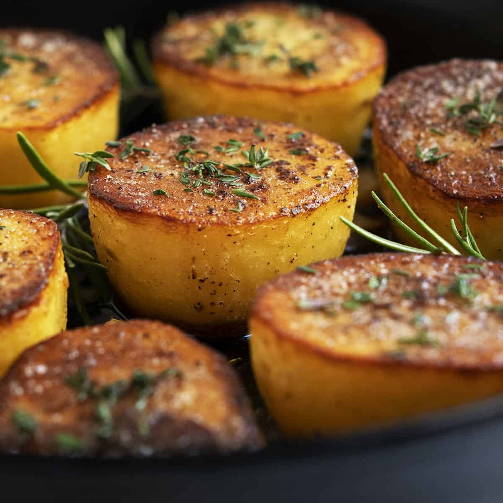

Fondant Potatoes

Description
Fondant potatoes are an elegant side dish featuring tender, buttery potatoes with a crisp, golden crust and a luscious, creamy center. The cooking method involves a combination of sautéing and braising, resulting in a perfect balance of textures and flavors. The potatoes are first seared to develop a rich, caramelized exterior, then simmered in a flavorful broth, absorbing savory notes and becoming irresistibly soft.
Ingredients (for 6)
- 2 tbsp vegetable oil
- 3 large russet potatoes (other varieties will not work as well)
- salt and pepper to taste
- a knob of butter (a 2 or 3 tablespoon size chunk)
- 4 thyme sprigs
- 1/2 cup chicken broth or stock, more if needed
Steps
- Peel and slice potatoes into thick rounds, about 1 to 1.5 inches in thickness.
- Heat a mixture of butter and oil in a heavy-bottomed skillet over medium-high heat.
- Add the potato rounds and cook for 4-5 minutes on each side, or until they develop a golden-brown crust.
- Pour in enough vegetable or chicken broth to cover the potatoes halfway.
- Add a few sprigs of fresh thyme or rosemary for added flavor.
- Reduce heat to low, cover the skillet, and let the potatoes simmer gently for 20-25 minutes, or until tender and the broth has reduced to a glaze.
- Remove the lid and cook for an additional 2-3 minutes if needed, allowing the glaze to thicken further.
- Serve the fondant potatoes warm, drizzled with any remaining glaze from the pan.